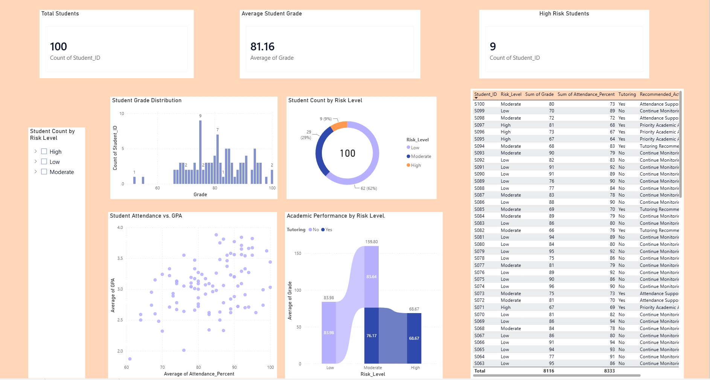

Kennesaw State University
Human Services
Concentration: Nonprofit Management
Aspiring Data Analyst | Business Intelligence | Data Visualization
Transforming complex data into meaningful insights and helping organizations make informed decisions through analytics.
View My ProjectsConnect on LinkedIn ↗I'm Atarvia Perrin, an aspiring data analytics professional and Master of Public Administration candidate at Clark Atlanta University, concentrating in Public Policy. I earned my Bachelor of Science in Human Services from Kennesaw State University, with a concentration in Nonprofit Management.
My passion lies at the intersection of data analytics, institutional research, higher education, and public policy. I enjoy transforming complex data into meaningful insights that improve organizational performance, support student success, and inform decision-making.
Through my experiences in institutional research, information technology, and nonprofit organizations, I've developed skills in data analysis, research, visualization, and program evaluation. I have experience using Power BI, Tableau, Excel, and R to analyze data, develop dashboards, and communicate findings.
I am also involved in the National Society of Black Engineers (NSBE) and Black Women in Data, communities that encourage professional growth, networking, and representation in technology and analytics.
Looking ahead, I aspire to pursue a Master of Science in Analytics to strengthen my quantitative and technical expertise. My long-term goal is to connect data, policy, and organizational strategy to drive meaningful change.
Data Analytics • Institutional Research • Higher Education • Public Policy
Power BI • Tableau • Excel • R
National Society of Black Engineers (NSBE)
Black Women in Data
My academic journey combines human services, nonprofit leadership, public policy, and a growing foundation in data analytics.
Human Services
Concentration: Nonprofit Management
Master of Public Administration (MPA)
Concentration: Public Policy
Explore my growing collection of data analytics projects.

A Power BI dashboard designed to explore academic performance and identify students who may benefit from additional support. It brings together attendance, grades, risk categories, and intervention information in one view.
Power BIExcelData VisualizationStudent Success
AP Analytics is my developing analytics business focused on helping nonprofit organizations transform raw data into meaningful visualizations and actionable insights.
My vision is to make data more accessible through reporting, dashboard development, and practical analytics solutions.
Interested in my projects, professional journey, or future collaborations?
LinkedIn ↗GitHub ↗